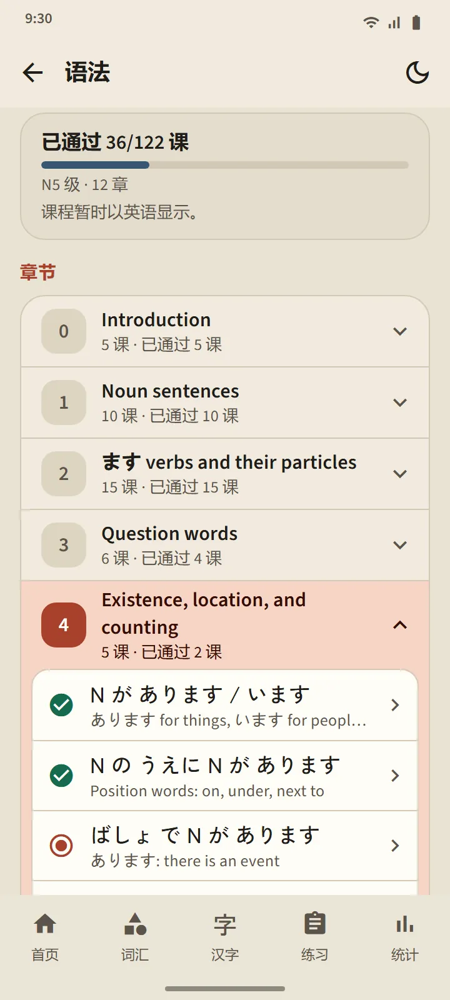
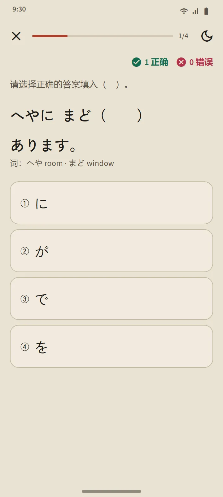

12 章，122 节课
“语法”页面从首页的“日语基础”部分打开。章节会就地展开，一次展开一章，每节课会标记为未打开、已阅读或练习已通过。课程大纲的设计保证 N5 模拟考试套题中出现的每一个句型都有对应的课。
| 章 | 内容 |
|---|---|
| 0 | Introduction |
| 1 | Noun sentences |
| 2 | ます verbs and their particles |
| 3 | Question words |
| 4 | Existence, location, and counting |
| 5 | Adjectives, likes, and wants |
| 6 | Comparison |
| 7 | Inviting, offering, choosing |
| 8 | The て form |
| 9 | The ない, dictionary, and た forms |
| 10 | Joining sentences |
| 11 | Conversational expressions |

一节课的结构
每节课的版式都相同：句型及其含义、接续方法（公式，附例词）、讲解、带振假名且可以收听的例句，以及针对相似句型的不要混淆。日语句子只会在词组之间换行，所以在小屏手机上也能轻松阅读。
附解析的练习
课程底部的按钮会打开一组三到五道题的练习。每个答案都附有解析；最多答错一道就算该课通过，未通过的可以重做。结果会记录在“语法”页面和“统计”标签页中。

多种语言
讲解、例句释义、答案选项和解析提供 12 种语言：英语、印度尼西亚语、越南语、缅甸语、尼泊尔语、泰语、僧伽罗语、菲律宾语、印地语、孟加拉语、蒙古语和高棉语。日语句子、公式和答案在每种语言中都相同。课程是为 TokuGo 编写的，然后经过审核；开放资料只用于交叉核对。